One evening, an Alaskan sticks a note to his refrigerator with a small magnet. Through the kitchen window, the Aurora Borealis glows in the night sky. This grand spectacle is shaped by the same force that holds the note to the refrigerator.
People have been aware of magnets and magnetism for thousands of years. The earliest records date to well before the time of Christ, particularly in a region of Asia Minor called Magnesia (the name of this region is the source of words likemagnetic). Magnetic rocks found in Magnesia, which is now part of western Turkey, stimulated interest during ancient times. A practical application for magnets was found later, when they were employed as navigational compasses. The use of magnets in compasses resulted not only in improved long-distance sailing, but also in the names of “north” and “south” being given to the two types of magnetic poles.
Today magnetism plays many important roles in our lives. Physicists’ understanding of magnetism has enabled the development of technologies that affect our everyday lives. The iPod in your purse or backpack, for example, wouldn’t have been possible without the applications of magnetism and electricity on a small scale.
The discovery that weak changes in a magnetic field in a thin film of iron and chromium could bring about much larger changes in electrical resistance was one of the first large successes of nanotechnology. The 2007 Nobel Prize in Physics went to Albert Fert from France and Peter Grunberg from Germany for this discovery ofgiant magnetoresistanceand its applications to computer memory.
All electric motors, with uses as diverse as powering refrigerators, starting cars, and moving elevators, contain magnets. Generators, whether producing hydroelectric power or running bicycle lights, use magnetic fields. Recycling facilities employ magnets to separate iron from other refuse. Hundreds of millions of dollars are spent annually on magnetic containment of fusion as a future energy source. Magnetic resonance imaging (MRI) has become an important diagnostic tool in the field of medicine, and the use of magnetism to explore brain activity is a subject of contemporary research and development. The list of applications also includes computer hard drives, tape recording, detection of inhaled asbestos, and levitation of high-speed trains. Magnetism is used to explain atomic energy levels, cosmic rays, and charged particles trapped in the Van Allen belts. Once again, we will find all these disparate phenomena are linked by a small number of underlying physical principles.
Paul Peter Urone (Professor Emeritus at California State University, Sacramento) and Roger Hinrichs (State University of New York, College at Oswego) with Contributing Authors: Kim Dirks (University of Auckland) and Manjula Sharma (University of Sydney). This work is licensed by OpenStax University Physics under aCreative Commons Attribution License (by 4.0).
Paul Peter Urone (Professor Emeritus at California State University, Sacramento) and Roger Hinrichs (State University of New York, College at Oswego) with Contributing Authors: Kim Dirks (University of Auckland) and Manjula Sharma (University of Sydney). This work is licensed by OpenStax University Physics under aCreative Commons Attribution License (by 4.0).
📖 OpenStax College Physics, Section 22.0. openstax.org · CC BY 4.0
- Describe the difference between the north and south poles of a magnet.
- Describe how magnetic poles interact with each other.
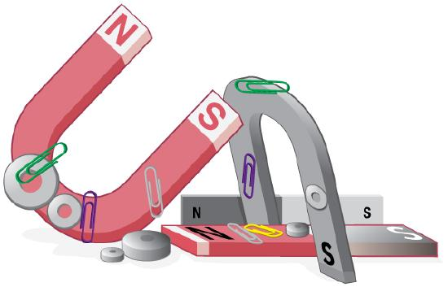
All magnets attract iron, such as that in a refrigerator door. However, magnets may attract or repel other magnets. Experimentation shows that all magnets have two poles. If freely suspended, one pole will point toward the north. The two poles are thus named thenorth magnetic poleand thesouth magnetic pole(or more properly, north-seeking and south-seeking poles, for the attractions in those directions).
UNIVERSAL CHARACTERISTICS OF MAGNETS AND MAGNET POLES
It is a universal characteristic of all magnets thatlike poles repel and unlike poles attract. (Note the similarity with electrostatics: unlike charges attract and like charges repel.)
Further experimentation shows that it isimpossible to separate north and south polesin the manner that + and − charges can be separated.
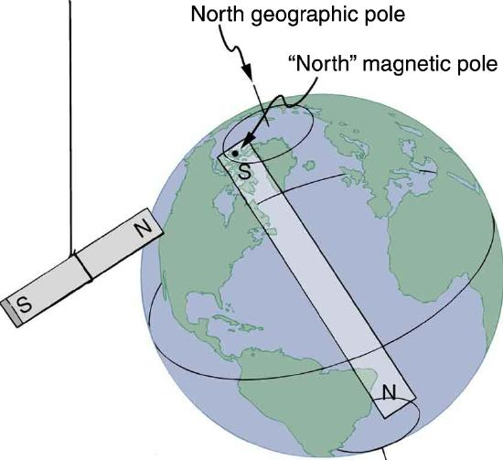
MISCONCEPTION ALERT: EARTH'S GEOGRAPHIC NORTH POLE HIDES AN S
The Earth acts like a very large bar magnet with its south-seeking pole near the geographic North Pole. That is why the north pole of your compass is attracted toward the geographic north pole of the Earth—because the magnetic pole that is near the geographic North Pole is actually a south magnetic pole! Confusion arises because the geographic term “North Pole” has come to be used (incorrectly) for the magnetic pole that is near the North Pole. Thus, “North magnetic pole” is actually a misnomer—it should be called the South magnetic pole.
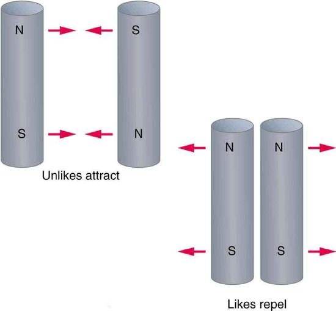
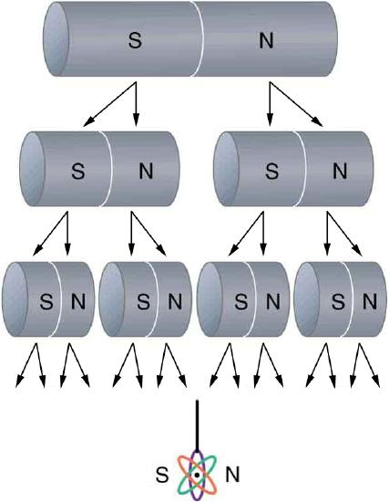
The fact that magnetic poles always occur in pairs of north and south is true from the very large scale—for example, sunspots always occur in pairs that are north and south magnetic poles—all the way down to the very small scale. Magnetic atoms have both a north pole and a south pole, as do many types of subatomic particles, such as electrons, protons, and neutrons.
MAKING CONNECTIONS: TAKE-HOME EXPERIMENT -- REFRIGERATOR MAGNETS
We know that like magnetic poles repel and unlike poles attract. See if you can show this for two refrigerator magnets. Will the magnets stick if you turn them over? Why do they stick to the door anyway? What can you say about the magnetic properties of the door next to the magnet? Do refrigerator magnets stick to metal or plastic spoons? Do they stick to all types of metal?
📖 OpenStax College Physics, Section 22.1. openstax.org · CC BY 4.0
- Define ferromagnet.
- Describe the role of magnetic domains in magnetization.
- Explain the significance of the Curie temperature.
- Describe the relationship between electricity and magnetism.
Only certain materials, such as iron, cobalt, nickel, and gadolinium, exhibit strong magnetic effects. Such materials are calledferromagnetic, after the Latin word for iron,ferrum. A group of materials made from the alloys of the rare earth elements are also used as strong and permanent magnets; a popular one is neodymium. Other materials exhibit weak magnetic effects, which are detectable only with sensitive instruments. Not only do ferromagnetic materials respond strongly to magnets (the way iron is attracted to magnets), they can also bemagnetizedthemselves—that is, they can be induced to be magnetic or made into permanent magnets.
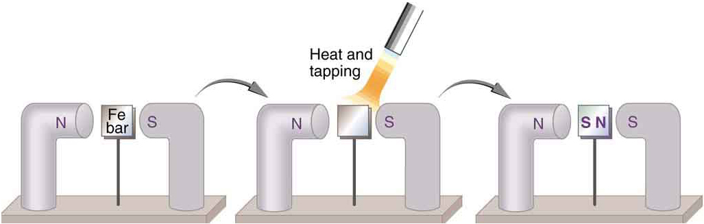
When a magnet is brought near a previously unmagnetized ferromagnetic material, it causes local magnetization of the material with unlike poles closest, as in Figure . (This results in the attraction of the previously unmagnetized material to the magnet.) What happens on a microscopic scale is illustrated in Figure . The regions within the material calleddomainsact like small bar magnets. Within domains, the poles of individual atoms are aligned. Each atom acts like a tiny bar magnet. Domains are small and randomly oriented in an unmagnetized ferromagnetic object. In response to an external magnetic field, the domains may grow to millimeter size, aligning themselves as shown in Figure 2b. This induced magnetization can be made permanent if the material is heated and then cooled, or simply tapped in the presence of other magnets.
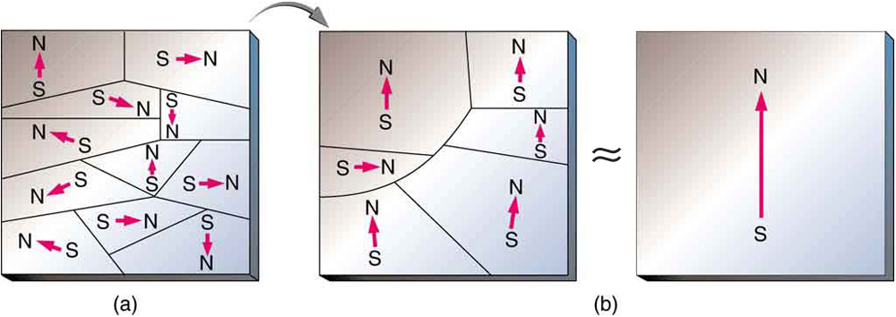
Conversely, a permanent magnet can be demagnetized by hard blows or by heating it in the absence of another magnet. Increased thermal motion at higher temperature can disrupt and randomize the orientation and the size of the domains. There is a well-defined temperature for ferromagnetic materials, which is called theCurie temperature, above which they cannot be magnetized. The Curie temperature for iron is 1043 K \(\left(770^{\circ}C\right)\), which is well above room temperature. There are several elements and alloys that have Curie temperatures much lower than room temperature and are ferromagnetic only below those temperatures.
Early in the 19th century, it was discovered that electrical currents cause magnetic effects. The first significant observation was by the Danish scientist Hans Christian Oersted (1777–1851), who found that a compass needle was deflected by a current-carrying wire. This was the first significant evidence that the movement of charges had any connection with magnets.Electromagnetismis the use of electric current to make magnets. These temporarily induced magnets are calledelectromagnets. Electromagnets are employed for everything from a wrecking yard crane that lifts scrapped cars to controlling the beam of a 90-km-circumference particle accelerator to the magnets in medical imaging machines (Figure .
Figure shows that the response of iron filings to a current-carrying coil and to a permanent bar magnet. The patterns are similar. In fact, electromagnets and ferromagnets have the same basic characteristics—for example, they have north and south poles that cannot be separated and for which like poles repel and unlike poles attract.
![The arrangement of iron filings as they are affected by a metal coil that is carrying an electric current and a bar magnet. At the poles of the magnet, the filings are aligned radially to the poles. Between the poles, the filings are roughly parallel to the magnet. Thus, from one pole to the other, the filings have an arcuate arrangement. The density of filings is very high at the poles and relatively low on either side of the center of the magnet. The arrangement is similar around the current-carrying coil.](images/ch22/fig22-10-the-arrangement-of-iron-filings-as-they-.jpg)
Combining a ferromagnet with an electromagnet can produce particularly strong magnetic effects (Figure . Whenever strong magnetic effects are needed, such as lifting scrap metal, or in particle accelerators, electromagnets are enhanced by ferromagnetic materials. Limits to how strong the magnets can be made are imposed by coil resistance (it will overheat and melt at sufficiently high current), and so superconducting magnets may be employed. These are still limited, because superconducting properties are destroyed by too great a magnetic field.
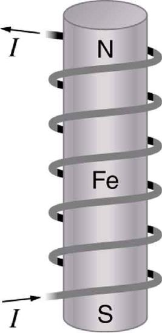
Figure shows a few uses of combinations of electromagnets and ferromagnets. Ferromagnetic materials can act as memory devices, because the orientation of the magnetic fields of small domains can be reversed or erased. Magnetic information storage on videotapes and computer hard drives are among the most common applications. This property is vital in our digital world.
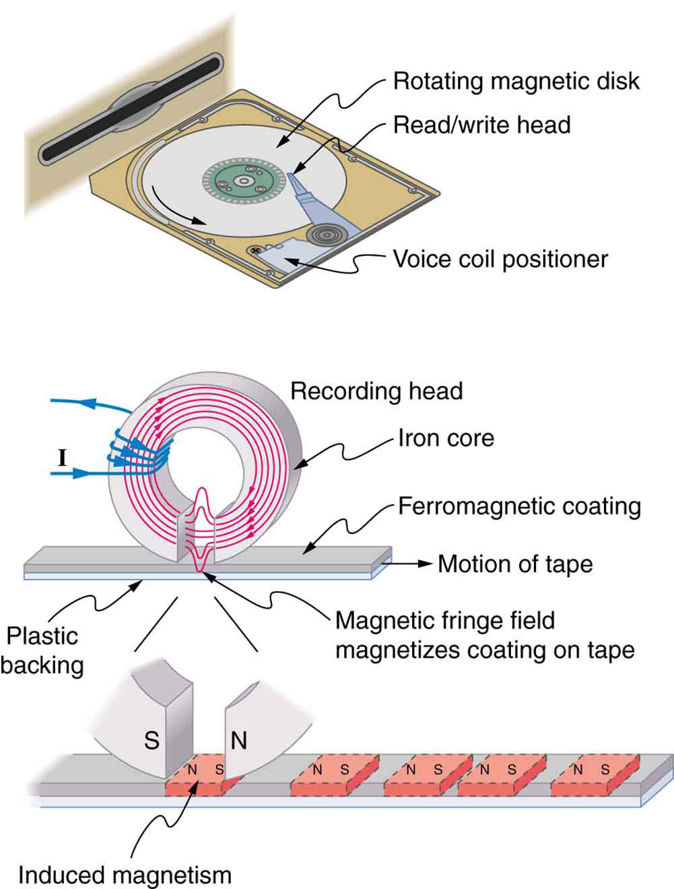
An electromagnet creates magnetism with an electric current. In later sections we explore this more quantitatively, finding the strength and direction of magnetic fields created by various currents. But what about ferromagnets? Figure shows models of how electric currents create magnetism at the submicroscopic level. (Note that we cannot directly observe the paths of individual electrons about atoms, and so a model or visual image, consistent with all direct observations, is made. We can directly observe the electron’s orbital angular momentum, its spin momentum, and subsequent magnetic moments, all of which are explained with electric-current-creating subatomic magnetism.) Currents, including those associated with other submicroscopic particles like protons, allow us to explain ferromagnetism and all other magnetic effects. Ferromagnetism, for example, results from an internal cooperative alignment of electron spins, possible in some materials but not in others.
Crucial to the statement that electric current is the source of all magnetism is the fact that it is impossible to separate north and south magnetic poles. (This is far different from the case of positive and negative charges, which are easily separated.) A current loop always produces a magnetic dipole—that is, a magnetic field that acts like a north pole and south pole pair. Since isolated north and south magnetic poles, calledmagnetic monopoles, are not observed, currents are used to explain all magnetic effects. If magnetic monopoles did exist, then we would have to modify this underlying connection that all magnetism is due to electrical current. There is no known reason that magnetic monopoles should not exist—they are simply never observed—and so searches at the subnuclear level continue. If they donotexist, we would like to find out why not. If theydoexist, we would like to see evidence of them.
ELECTRIC CURRENTS AND MAGNETISM
Electric current is the source of all magnetism.
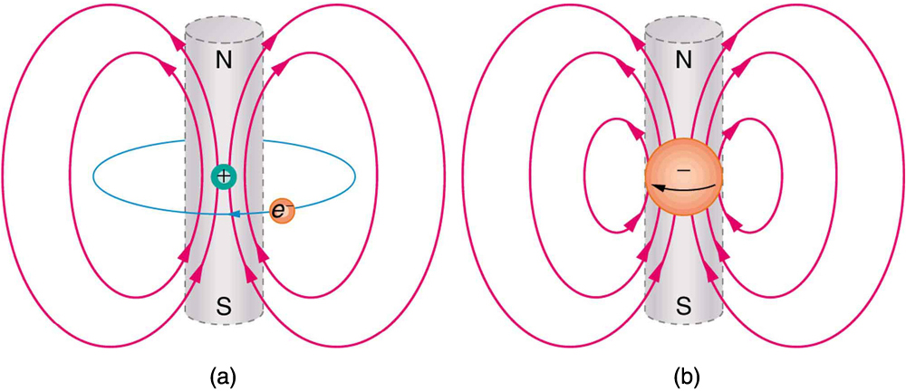
PHET EXPLORATIONS: MAGNETS AND ELECTROMAGNETS
Explore the interactions between acompass and bar magnet. Discover how you can use a battery and wire to make a magnet! Can you make it a stronger magnet? Can you make the magnetic field reverse?
📖 OpenStax College Physics, Section 22.2. openstax.org · CC BY 4.0
- Define magnetic field and describe the magnetic field lines of various magnetic fields.
Einstein is said to have been fascinated by a compass as a child, perhaps musing on how the needle felt a force without direct physical contact. His ability to think deeply and clearly about action at a distance, particularly for gravitational, electric, and magnetic forces, later enabled him to create his revolutionary theory of relativity. Since magnetic forces act at a distance, we define amagnetic fieldto represent magnetic forces. The pictorial representation ofmagnetic field linesis very useful in visualizing the strength and direction of the magnetic field. As shown in Figure , thedirection of magnetic field linesis defined to be the direction in which the north end of a compass needle points. The magnetic field is traditionally called theB-field.
![Three diagrams illustrating magnetic field lines. Figure a shows a bar magnet with a number of compasses arranged along the magnet on either side. The needles of the compasses at the north pole of the magnet point away from the pole. The needles of the compasses at the south pole of the magnet point toward the pole. The needles of compasses in between the two poles point parallel to the magnet, toward the south pole. Figure b shows lines running from the north pole out and around to the south pole. Figure c shows lines as closed loops running from the north pole outside the magnet and around the south pole, and then up through the magnet to the north pole.](images/ch22/fig22-14-three-diagrams-illustrating-magnetic-fie.jpg)
Small compasses used to test a magnetic field will not disturb it. (This is analogous to the way we tested electric fields with a small test charge. In both cases, the fields represent only the object creating them and not the probe testing them.) Figure shows how the magnetic field appears for a current loop and a long straight wire, as could be explored with small compasses. A small compass placed in these fields will align itself parallel to the field line at its location, with its north pole pointing in the direction ofB. Note the symbols used for field into and out of the paper.
![Figure a: magnetic field of a circular current loop with a current moving counter-clockwise. The field lines are also roughly circular, running up through the center of the current loop, and back down outside the loop. Figure b: a straight wire with a current running straight up. The magnetic field lines circle the wire in a counter-clockwise direction. Figure c: a right hand with the thumb pointing up, parallel to a wire with the current running upward. The figures of the hand curl around the wire in the counter-clockwise direction to show the direction of the magnetic field when current is up. The symbol to represent magnetic field lines running out of the surface and toward the viewer—B out—is a circle with a sold circle inside. The symbol to represent magnetic field lines running into the surface and away from the viewer—B in—is represented with a circle with an x inside it. When the current is running straight up, B out is to the left and B in is to the right.](images/ch22/fig22-15-figure-a-magnetic-field-of-a-circular-cu.jpg)
MAKING CONNECTIONS: CONCEPT OF A FIELD
A field is a way of mapping forces surrounding any object that can act on another object at a distance without apparent physical connection. The field represents the object generating it. Gravitational fields map gravitational forces, electric fields map electrical forces, and magnetic fields map magnetic forces.
Extensive exploration of magnetic fields has revealed a number of hard-and-fast rules. We use magnetic field lines to represent the field (the lines are a pictorial tool, not a physical entity in and of themselves). The properties of magnetic field lines can be summarized by these rules:
The last property is related to the fact that the north and south poles cannot be separated. It is a distinct difference from electric field lines, which begin and end on the positive and negative charges. If magnetic monopoles existed, then magnetic field lines would begin and end on them.
📖 OpenStax College Physics, Section 22.3. openstax.org · CC BY 4.0
- Describe the effects of magnetic fields on moving charges.
- Use the right hand rule 1 to determine the velocity of a charge, the direction of the magnetic field, and the direction of the magnetic force on a moving charge.
- Calculate the magnetic force on a moving charge.
What is the mechanism by which one magnet exerts a force on another? The answer is related to the fact that all magnetism is caused by current, the flow of charge.Magnetic fields exert forces on moving charges, and so they exert forces on other magnets, all of which have moving charges.
The magnetic force on a moving charge is one of the most fundamental known. Magnetic force is as important as the electrostatic or Coulomb force. Yet the magnetic force is more complex, in both the number of factors that affects it and in its direction, than the relatively simple Coulomb force. The magnitude of themagnetic force \(F\) on a charge \(q\) moving at a speed \(v\) in a magnetic field of strength \(B\) is given by
where \(\theta\) is the angle between the directions of \(\bf{v}\) and \(\bf{B}\). This force is often called theLorentz force.In fact, this is how we define the magnetic field strength \(B\)--in in terms of the force on a charged particle moving in a magnetic field. The SI unit for magnetic field strength \(B\) is called thetesla(T) after the eccentric but brilliant inventor Nikola Tesla (1856–1943). To determine how the tesla relates to other SI units, we solve
Because \(\sin \theta\) is unitless, the tesla is
\[1 \,T = \frac{1\, N}{C \cdot m/s} = \dfrac{1\, N}{A \cdot m}\] (note that C/s = A).
Another smaller unit, called thegauss(G), where \(1 G = 10^{-4} T\), is sometimes used. The strongest permanent magnets have fields near 2 T; superconducting electromagnets may attain 10 T or more. The Earth’s magnetic field on its surface is only about \(5 \times 10^{-5} T\), or 0.5 G.
Thedirectionof the magnetic force \(\bf{F}\) is perpendicular to the plane formed by \(\bf{v}\) and \(\bf{B}\), as determined by theright hand rule 1(or RHR-1), which is illustrated in Figure . RHR-1 states that, to determine the direction of the magnetic force on a positive moving charge, you point the thumb of the right hand in the direction of \(v\), the fingers in the direction of \(\bf{B}\), and a perpendicular to the palm points in the direction of \(\bf{F}\). One way to remember this is that there is one velocity, and so the thumb represents it. There are many field lines, and so the fingers represent them. The force is in the direction you would push with your palm. The force on a negative charge is in exactly the opposite direction to that on a positive charge.
![The right hand rule 1. An outstretched right hand rests palm up on a piece of paper on which a vector arrow v points to the right and a vector arrow B points toward the top of the paper. The thumb points to the right, in the direction of the v vector arrow. The fingers point in the direction of the B vector. B and v are in the same plane. The F vector points straight up, perpendicular to the plane of the paper, which is the plane made by B and v. The angle between B and v is theta. The magnitude of the magnetic force F equals q v B sine theta.](images/ch22/fig22-16-the-right-hand-rule-1-an-outstretched-ri.jpg)
MAKING CONNECTIONS: CHARGES AND MAGNETS
There is no magnetic force on static charges. However, there is a magnetic force on moving charges. When charges are stationary, their electric fields do not affect magnets. But, when charges move, they produce magnetic fields that exert forces on other magnets. When there is relative motion, a connection between electric and magnetic fields emerges—each affects the other.
With the exception of compasses, you seldom see or personally experience forces due to the Earth’s small magnetic field. To illustrate this, suppose that in a physics lab you rub a glass rod with silk, placing a 20-nC positive charge on it. Calculate the force on the rod due to the Earth’s magnetic field, if you throw it with a horizontal velocity of 10 m/s due west in a place where the Earth’s field is due north parallel to the ground. (The direction of the force is determined with right hand rule 1 as shown in Figure .
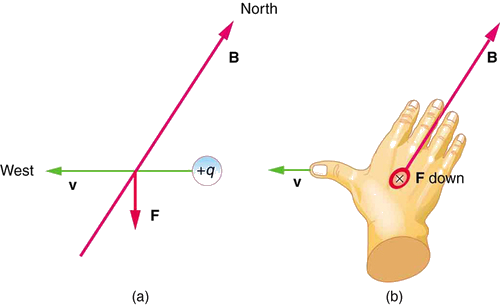
We are given the charge, its velocity, and the magnetic field strength and direction. We can thus use the equation \(F = qvB \sin\theta\) to find the force.
The magnetic force is
We see that \(sin \theta = 1\), since the angle between the velocity and the direction of the field is \(90^{\circ}\). Entering the other given quantities yields
This force is completely negligible on any macroscopic object, consistent with experience. (It is calculated to only one digit, since the Earth’s field varies with location and is given to only one digit.) The Earth’s magnetic field, however, does produce very important effects, particularly on submicroscopic particles. Some of these are explored in the next section.
📖 OpenStax College Physics, Section 22.4. openstax.org · CC BY 4.0
- Describe the effects of a magnetic field on a moving charge.
- Calculate the radius of curvature of the path of a charge that is moving in a magnetic field.
Magnetic force can cause a charged particle to move in a circular or spiral path. Cosmic rays are energetic charged particles in outer space, some of which approach the Earth. They can be forced into spiral paths by the Earth’s magnetic field. Protons in giant accelerators are kept in a circular path by magnetic force. The bubble chamber photograph in Figure shows charged particles moving in such curved paths. The curved paths of charged particles in magnetic fields are the basis of a number of phenomena and can even be used analytically, such as in a mass spectrometer.
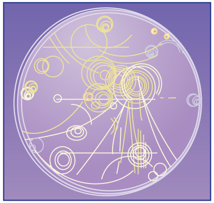
So does the magnetic force cause circular motion? Magnetic force is always perpendicular to velocity, so that it does no work on the charged particle. The particle’s kinetic energy and speed thus remain constant. The direction of motion is affected, but not the speed. This is typical of uniform circular motion. The simplest case occurs when a charged particle moves perpendicular to a uniform \(B\)-field, such as shown in Figure 2. (If this takes place in a vacuum, the magnetic field is the dominant factor determining the motion.) Here, the magnetic force supplies the centripetal force \(F_{c} = mv^{2}/r\). Noting that \(sin \theta = 1\), we see that \(F = qvB\).
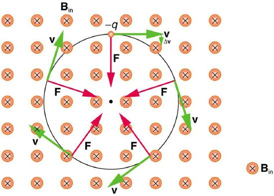
Because the magnetic force \(F\) supplies the centripetal force \(F_{c}\), we have \[qvB = \frac{mv^{2}}{r}.\label{22.6.1}\] Solving for \(r\) yields \[r = \frac{mv}{qB}.\label{22.6.2}\] Here, \(r\) is the radius of curvature of the path of a charged particle with mass \(m\) and charge \(q\), moving at speed \(v\) perpendicular to a magnetic field of strength \(B\). If the velocity is not perpendicular to the magnetic field, then \(v\) is the component of the velocity perpendicular to the field. The component of the velocity parallel to the field is unaffected, since the magnetic force is zero for motion parallel to the field. This produces a spiral motion rather than a circular one.
A magnet brought near an old-fashioned TV screen such as in Figure 3 (TV sets with cathode ray tubes instead of LCD screens) severely distorts its picture by altering the path of the electrons that make its phosphors glow.(Don't try this at home, as it will permanently magnetize and ruin the TV.)To illustrate this, calculate the radius of curvature of the path of an electron having a velocity of \(6.00 \times 10^{7} m/s\) (corresponding to the accelerating voltage of about 10.0 kV used in some TVs) perpendicular to a magnetic field of strength \(B = 0.500 T\) (obtainable with permanent magnets).
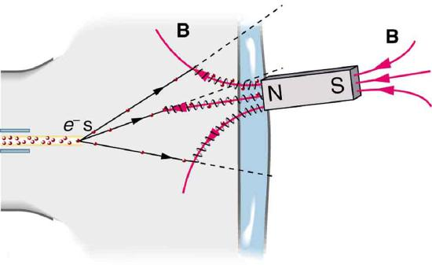
We can find the radius of curvature \(r\) directly from the equation \(r = \frac{mv}{qB}\), since all other quantities in it are given or known.
Using known values for the mass and charge of an electron, along with the given values of \(v\) and \(B\) gives us \[r = \frac{mv}{qB} = \frac{\left( 9.11 \times 10^{-31} kg \right) \left( 6.00 \times 10^{7} m/s \right) } { \left( 1.60 \times 10^{-19} C \right) \left( 0.500 T \right) } \] \[= 6.83 \times 10^{-4} m\] or \[r = 0.683 mm.\]
The small radius indicates a large effect. The electrons in the TV picture tube are made to move in very tight circles, greatly altering their paths and distorting the image.
Figure shows how electrons not moving perpendicular to magnetic field lines follow the field lines. The component of velocity parallel to the lines is unaffected, and so the charges spiral along the field lines. If field strength increases in the direction of motion, the field will exert a force to slow the charges, forming a kind of magnetic mirror, as shown below.
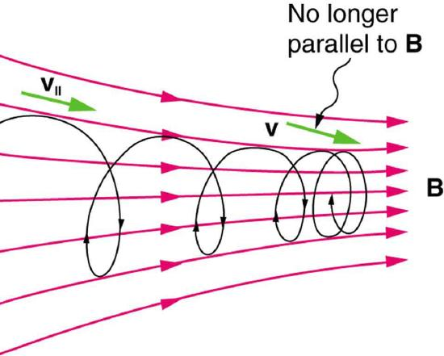
The properties of charged particles in magnetic fields are related to such different things as the Aurora Australis or Aurora Borealis and particle accelerators.Charged particles approaching magnetic field lines may get trapped in spiral orbits about the lines rather than crossing them, as seen above. Some cosmic rays, for example, follow the Earth’s magnetic field lines, entering the atmosphere near the magnetic poles and causing the southern or northern lights through their ionization of molecules in the atmosphere. Those particles that approach middle latitudes must cross magnetic field lines, and many are prevented from penetrating the atmosphere. Cosmic rays are a component of background radiation; consequently, they give a higher radiation dose at the poles than at the equator.
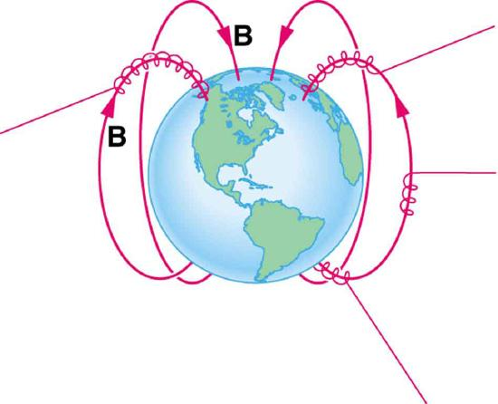
Some incoming charged particles become trapped in the Earth’s magnetic field, forming two belts above the atmosphere known as the Van Allen radiation belts after the discoverer James A. Van Allen, an American astrophysicist (Figure . Particles trapped in these belts form radiation fields (similar to nuclear radiation) so intense that manned space flights avoid them and satellites with sensitive electronics are kept out of them. In the few minutes it took lunar missions to cross the Van Allen radiation belts, astronauts received radiation doses more than twice the allowed annual exposure for radiation workers. Other planets have similar belts, especially those having strong magnetic fields like Jupiter.
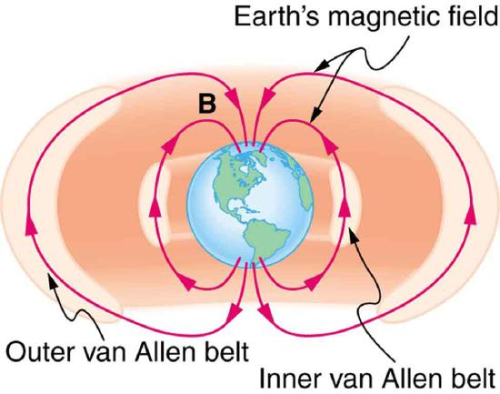
Back on Earth, we have devices that employ magnetic fields to contain charged particles. Among them are the giant particle accelerators that have been used to explore the substructure of matter (Figure . Magnetic fields not only control the direction of the charged particles, they also are used to focus particles into beams and overcome the repulsion of like charges in these beams.
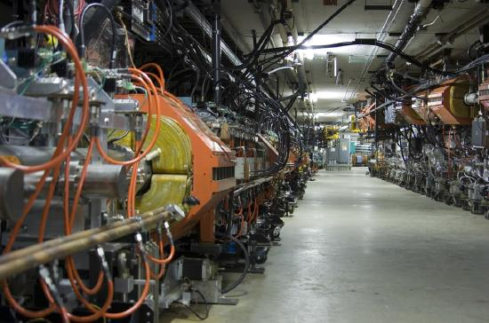
Thermonuclear fusion (like that occurring in the Sun) is a hope for a future clean energy source. One of the most promising devices is thetokamak, which uses magnetic fields to contain (or trap) and direct the reactive charged particles (Figure . Less exotic, but more immediately practical, amplifiers in microwave ovens use a magnetic field to contain oscillating electrons. These oscillating electrons generate the microwaves sent into the oven.
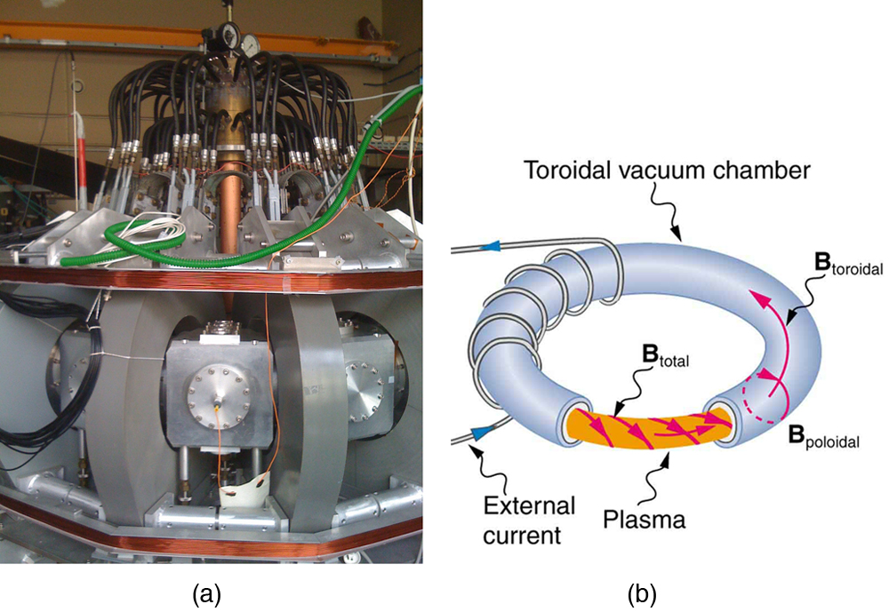
Mass spectrometershave a variety of designs, and many use magnetic fields to measure mass. The curvature of a charged particle’s path in the field is related to its mass and is measured to obtain mass information. Historically, such techniques were employed in the first direct observations of electron charge and mass. Today, mass spectrometers (sometimes coupled with gas chromatographs) are used to determine the make-up and sequencing of large biological molecules.
📖 OpenStax College Physics, Section 22.5. openstax.org · CC BY 4.0
- Describe the Hall effect.
- Calculate the Hall emf across a current-carrying conductor.
We have seen effects of a magnetic field on free-moving charges. The magnetic field also affects charges moving in a conductor. One result is the Hall effect, which has important implications and applications.
Figure shows what happens to charges moving through a conductor in a magnetic field. The field is perpendicular to the electron drift velocity and to the width of the conductor. Note that conventional current is to the right in both parts of the figure. In part (a), electrons carry the current and move to the left. In part (b), positive charges carry the current and move to the right. Moving electrons feel a magnetic force toward one side of the conductor, leaving a net positive charge on the other side. This separation of chargecreates a voltage\(\varepsilon\), known as theHall emf,acrossthe conductor. the creation of a voltageacrossa current-carrying conductor by a magnetic field is known as theHall effect, after Edwin Hall, the American physicist who discovered it in 1879.
![Figure a shows an electron with velocity v moving toward the left. The magnetic field B is oriented out of the page. The current I is running toward the right. The force vector on the electron points downward. An illustration of the right hand rule shows the right thumb pointing left with the v vector, the fingers pointing toward 7 o’clock with the B vector, the force vector on a positive charge pointing up and the force vector on a negative charge pointing down. Figure b shows a positive charge moving toward the right. The magnetic field lines are coming out of the page. The current I is running toward the right. The force on the positive charge is down. An illustration of the right hand rule shows the thumb pointing in the direction of the charge’s velocity, the fingers pointing in the direction of B, and F pointing down away from the palm.](images/ch22/fig22-26-figure-a-shows-an-electron-with-velocity.jpg)
One very important use of the Hall effect is to determine whether positive or negative charges carries the current. Note that in Figure 1b, where positive charges carry the current, the Hall emf has the sign opposite to when negative charges carry the current. Historically, the Hall effect was used to show that electrons carry current in metals and it also shows that positive charges carry current in some semiconductors. The Hall effect is used today as a research tool to probe the movement of charges, their drift velocities and densities, and so on, in materials. In 1980, it was discovered that the Hall effect is quantized, an example of quantum behavior in a macroscopic object.
The Hall effect has other uses that range from the determination of blood flow rate to precision measurement of magnetic field strength. To examine these quantitatively, we need an expression for the Hall emf, \(\varepsilon\), across a conductor. Consider the balance of forces on a moving charge in a situation where \(B\), \(v\), and \(l\) are mutually perpendicular, such as shown in Figure . Although the magnetic force moves negative charges to one side, they cannot build up without limit. The electric field caused by their separation opposes the magnetic force, \(F = qvB\), and the electric force, \(F_{e} = qE\), eventually grows to equal it. That is,
Note that the electric field \(E\) is uniform across the conductor because the magnetic field \(B\) is uniform, as is the conductor. For a uniform electric field, the relationship between electric field and voltage is \(E = \varepsilon / l \), where \(l\) is the width of the conductor and \(\varepsilon\) is the Hall emf. Entering this into the last expression gives
Solving this for the Hall emf yields
if \(B\), \(v\), and \(l\) are mutually perpendicular.
where \(\varepsilon\) is the Hall effect voltage across a conductor of width \(l\) through which charges move at a speed \(v\).
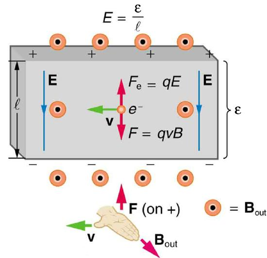
One of the most common uses of the Hall effect is in the measurement of magnetic field strength \(B\). Such devices, calledHall probes, can be made very small, allowing fine position mapping. Hall probes can also be made very accurate, usually accomplished by careful calibration. Another application of the Hall effect is to measure fluid flow in any fluid that has free charges (most do) (Figure . A magnetic field applied perpendicular to the flow direction produces a Hall emf \(\varepsilon\) as shown. Note that the sign of \(\varepsilon\) depends not on the sign of the charges, but only on the directions of \(B\) and \(v\). The magnitude of the Hall emf is \(\varepsilon = Blv\), where \(l\) is the pipe diameter, so that the average velocity \(v\) can be determined from \(\varepsilon\) providing the other factors are known.
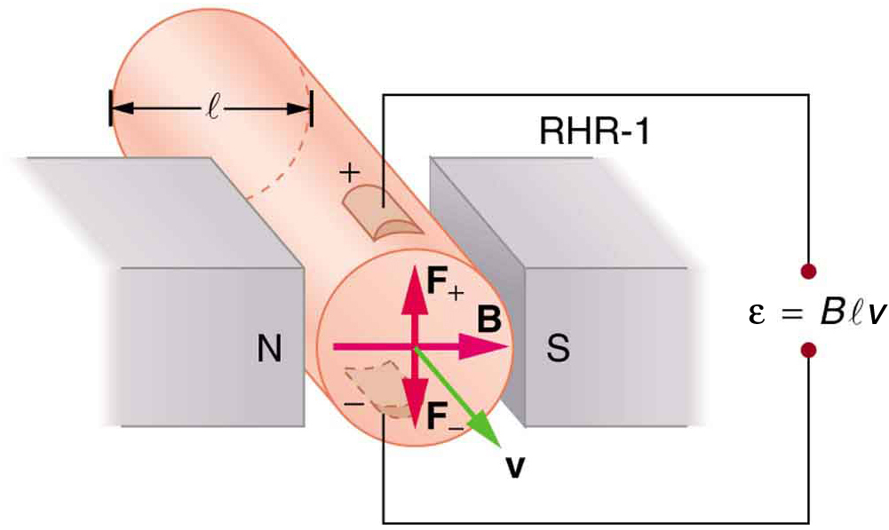
A Hall effect flow probe is placed on an artery, applying a 0.100-T magnetic field across it, in a setup similar to that in Figure . What is the Hall emf, given the vessel’s inside diameter is 4.00 mm and the average blood velocity is 20.0 cm/s?
Because \(B\), \(v\), and \(l\) are mutually perpendicular, the Equation \ref{22.7.4} can be used to find \(\varepsilon\).
Entering the given values for \(B\), \(v\), and \(l\) gives
This is the average voltage output. Instantaneous voltage varies with pulsating blood flow. The voltage is small in this type of measurement. \(\varepsilon\) is particularly difficult to measure, because there are voltages associated with heart action (ECG voltages) that are on the order of millivolts. In practice, this difficulty is overcome by applying an AC magnetic field, so that the Hall emf is AC with the same frequency. An amplifier can be very selective in picking out only the appropriate frequency, eliminating signals and noise at other frequencies.
📖 OpenStax College Physics, Section 22.6. openstax.org · CC BY 4.0
- Describe the effects of a magnetic force on a current-carrying conductor.
- Calculate the magnetic force on a current-carrying conductor.
Because charges ordinarily cannot escape a conductor, the magnetic force on charges moving in a conductor is transmitted to the conductor itself.
![A diagram showing a circuit with current I running through it. One section of the wire passes between the north and south poles of a magnet with a diameter l. Magnetic field B is oriented toward the right, from the north to the south pole of the magnet, across the wire. The current runs out of the page. The force on the wire is directed up. An illustration of the right hand rule 1 shows the thumb pointing out of the page in the direction of the current, the fingers pointing right in the direction of B, and the F vector pointing up and away from the palm.](images/ch22/fig22-29-a-diagram-showing-a-circuit-with-current.jpg)
We can derive an expression for the magnetic force on a current by taking a sum of the magnetic forces on individual charges. (The forces add because they are in the same direction.) The force on an individual charge moving at the drift velocity \(v_{d}\) is given by \(F = qv_{d}B\sin \theta \). Taking \(B\) to be uniform over a length of wire \(l\) and zero elsewhere, the total magnetic force on the wire is then \(F = \left(qv_{d}B \sin \theta \right) \left(N\right)\), where \(N\) is the number of charge carriers in the section of wire of length \(l\). Now, \(N = nV\), where \(n\) is the number of charge carriers per unit volume and \(V\) is the volume of wire in the field. Noting that \(V = Al\), where \(A\) is the cross-sectional area of the wire, then the force on the wire is \(F = \left(qv_{d}B\sin\theta\right))\left(nAl\right)\). Gathering terms,
Because \(nqAv_{d} = I\) (seeCurrent),
is the equation formagnetic force on a length\(l\)of wire carrying a current\(I\)in a uniform magnetic field\(B\), as shown in Figure . If we divide both sides of this expression by \(l\), we find that the magnetic force per unit length of wire in a uniform field is \(\frac{}{} = IB \sin \theta \). The direction of this force is given by RHR-1, with the thumb in the direction of the current \(I\). Then, with the fingers in the direction of \(B\), a perpendicular to the palm points in the direction of \(F\), as in Figure 2.
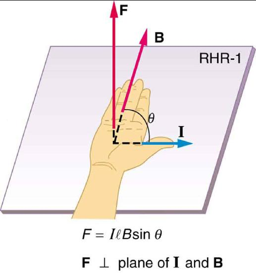
Calculate the force on the wire shown in Figure , given \(B = 1.50 T\), \(l = 5.00 cm\), and \(I = 20.0 A\).
The force can be found with the given information by using \(F = \pi B \sin\theta\) and noting that the angle \(\theta\) between \(I\) and \(B\) is \(90^{\circ}\), so that \(sin \theta = 1\).
Entering the given values into \(F = \pi B \sin \theta\) yields
The units for tesla are \(1 T = \frac{N}{A \cdot m}\); thus,
This large magnetic field creates a significant force on a small length of wire.
Magnetic force on current-carrying conductors is used to convert electric energy to work. (Motors are a prime example—they employ loops of wire and are considered in the next section.) Magnetohydrodynamics (MHD) is the technical name given to a clever application where magnetic force pumps fluids without moving mechanical parts (Figure .
![Diagram showing a cylinder of fluid of diameter l placed between the north and south poles of a magnet. The north pole is to the left. The south pole is to the right. The cylinder is oriented out of the page. The magnetic field is oriented toward the right, from the north to the south pole, and across the cylinder of fluid. A current-carrying wire runs through the fluid cylinder with current I oriented downward, perpendicular to the cylinder. Negative charges within the fluid have a velocity vector pointing up. Positive charges within the fluid have a velocity vector pointing downward. The force on the fluid is out of the page. An illustration of the right hand rule 1 shows the thumb pointing downward with the current, the fingers pointing to the right with B, and force F oriented out of the page, away from the palm.](images/ch22/fig22-31-diagram-showing-a-cylinder-of-fluid-of-d.jpg)
A strong magnetic field is applied across a tube and a current is passed through the fluid at right angles to the field, resulting in a force on the fluid parallel to the tube axis as shown. The absence of moving parts makes this attractive for moving a hot, chemically active substance, such as the liquid sodium employed in some nuclear reactors. Experimental artificial hearts are testing with this technique for pumping blood, perhaps circumventing the adverse effects of mechanical pumps. (Cell membranes, however, are affected by the large fields needed in MHD, delaying its practical application in humans.) MHD propulsion for nuclear submarines has been proposed, because it could be considerably quieter than conventional propeller drives. The deterrent value of nuclear submarines is based on their ability to hide and survive a first or second nuclear strike. As we slowly disassemble our nuclear weapons arsenals, the submarine branch will be the last to be decommissioned because of this ability (Figure . Existing MHD drives are heavy and inefficient—much development work is needed.
![Diagram showing a zoom in to a magnetohydrodynamic propulsion system on a nuclear submarine. Liquid moves through the thruster duct, which is oriented out of the page. Magnetic fields emanate from the coils and pass through a duct. The magnetic flux is oriented up, perpendicular to the duct. Each duct is wrapped in saddle-shaped superconducting coils. An electric current runs to the right, through the liquid and perpendicular to the velocity of the liquid. The electric current flows between a pair of electrodes inside each thruster duct. A repulsive interaction between the magnetic field and electric current drives water through the duct. An illustration of the right hand rule shows the thumb pointing to the right with the electric current. The fingers point up with the magnetic field. The force on the liquid is oriented out of the page, away from the palm.](images/ch22/fig22-32-diagram-showing-a-zoom-in-to-a-magnetohy.jpg)
📖 OpenStax College Physics, Section 22.7. openstax.org · CC BY 4.0
- Describe how motors and meters work in terms of torque on a current loop.
- Calculate the torque on a current-carrying loop in a magnetic field.
Motorsare the most common application of magnetic force on current-carrying wires. Motors have loops of wire in a magnetic field. When current is passed through the loops, the magnetic field exerts torque on the loops, which rotates a shaft. Electrical energy is converted to mechanical work in the process (Figure .
![Diagram showing a current-carrying loop of width w and length l between the north and south poles of a magnet. The north pole is to the left and the south pole is to the right of the loop. The magnetic field B runs from the north pole across the loop to the south pole. The loop is shown at an instant, while rotating clockwise. The current runs up the left side of the loop, across the top, and down the right side. There is a force F oriented into the page on the left side of the loop and a force F oriented out of the page on the right side of the loop. The torque on the loop is clockwise as viewed from above.](images/ch22/fig22-33-diagram-showing-a-current-carrying-loop-.jpg)
Let us examine the force on each segment of the loop in Figure 1 to find the torques produced about the axis of the vertical shaft. (This will lead to a useful equation for the torque on the loop.) We take the magnetic field to be uniform over the rectangular loop, which has width \(w\) and height \(l\). First, we note that the forces on the top and bottom segments are vertical and, therefore, parallel to the shaft, producing no torque. Those vertical forces are equal in magnitude and opposite in direction, so that they also produce no net force on the loop. Figure shows views of the loop from above. Torque is defined as \(\tau = rF\sin \theta \), where \(F\) is the force, \(r\) is the distance from the pivot that the force is applied, and \(\theta\) is the angle between \(r\) and \(F\). As seen in Figure \(\PageIndex{1a}\), right hand rule 1 gives the forces on the sides to be equal in magnitude and opposite in direction, so that the net force is again zero. However, each force produces a clockwise torque. Since \(r = w/2\), the torque on each vertical segment is \(\left( w/2\right)F\sin\theta\), and the two add to give a total torque
![Diagram showing a current-carrying loop from the top, and four different times as it rotates in a magnetic field. The magnetic field oriented toward the right, perpendicular to the vertical dimension of the loop. In figure a, the top view of the loop is oriented at an angle to the magnetic field lines, which run left to right. The force on the loop is up on the lower left side where the current comes out of the page. The force is down on the upper right side where the loop goes into the page. The angle between the force and the loop is theta. Torque is clockwise and equals w over 2 times I l B sine theta. Figure b shows the top view of the loop parallel to the magnetic field lines. The force on the loop is up on the left side where I comes out of the page. The force on the loop is down on the right side where I goes into the page. The angle theta between the F and B is ninety degrees. Torque is clockwise and equals w over 2 I l B equals maximum torque. Figure c shows the top view of the loop oriented perpendicular to B. The force on the loop is up at the top, where I comes out of the page, and down at the bottom where I goes into the page. Theta equals 0 degrees. Torque equals zero since sine theta equals 0. In figure d the force is down on the lower left side of the loop where I goes in, and up on the upper right side of the loop where I comes out. The torque is counterclockwise. Torque is negative.](images/ch22/fig22-34-diagram-showing-a-current-carrying-loop-.jpg)
Now, each vertical segment has a length \(l\) that is perpendicular to \(B\), so that the force on each is \(F = \pi B\). Entering \(F\) into the expression for torque yields
If we have a multiple loop of \(N\) turns, we get \(N\) times the torque of one loop. Finally, note that the area of the loop is \(A = wl\); the expression for the torque becomes
This is the torque on a current-carrying loop in a uniform magnetic field. This equation can be shown to be valid for a loop of any shape. The loop carries a current \(I\), has \(N\) turns, each of area \(A\), and the perpendicular to the loop makes an angle \(\theta\) with the field \(B\). The net force on the loop is zero.
Find the maximum torque on a 100-turn square loop of a wire of 10.0 cm on a side that carries 15.0 A of current in a 2.00-T field.
Torque on the loop can be found using \(\tau = NIAB\sin\theta\). Maximum torque occurs when \(\theta = 90^{\circ}\) and \(\sin \theta = 1\).
For \(\sin \theta = 1\), the maximum torque is
Entering known values yields
This torque is large enough to be useful in a motor.
The torque found in the preceding example is the maximum. As the coil rotates, the torque decreases to zero at \(\theta = 0\). The torque thenreversesits direction once the coil rotates past \(\theta = 0\) (Figure \(\PageIndex{1d}\)). This means that, unless we do something, the coil will oscillate back and forth about equilibrium at \(\theta = 0\). This means that, unless we do something, the coil will oscillate back and forth about equilibrium at \(\theta = 0\) with automatic switches calledbrushes(Figure .
![The diagram shows a current-carrying loop between the north and south poles of a magnet at two different times. The north pole is to the left and the south pole is to the right. The magnetic field runs from the north pole to the right to the south pole. Figure a shows the current running through the loop. It runs up on the left side, and down on the right side. The force on the left side is into the page. The force on the right side is out of the page. The torque is clockwise when viewed from above. Figure b shows the loop when it is oriented perpendicular to the magnet. In both diagrams, the bottom of each side of the loop is connected to a half-cylinder that is next to a rectangular brush that is then connected to the rest of the circuit.](images/ch22/fig22-35-the-diagram-shows-a-current-carrying-loo.jpg)
Meters, such as those in analog fuel gauges on a car, are another common application of magnetic torque on a current-carrying loop. Figure shows that a meter is very similar in construction to a motor. The meter in the figure has its magnets shaped to limit the effect of \(\theta\) by making \(B\) perpendicular to the loop over a large angular range. Thus the torque is proportional to \(I\) and not \(\theta\). A linear spring exerts a counter-torque that balances the current-produced torque. This makes the needle deflection proportional to \(I\). If an exact proportionality cannot be achieved, the gauge reading can be calibrated. To produce a galvanometer for use in analog voltmeters and ammeters that have a low resistance and respond to small currents, we use a large loop area \(A\), high magnetic field \(B\), and low-resistance coils.
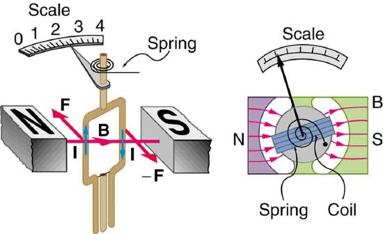
📖 OpenStax College Physics, Section 22.8. openstax.org · CC BY 4.0
- Calculate current that produces a magnetic field.
- Use the right hand rule 2 to determine the direction of current or the direction of magnetic field loops.
How much current is needed to produce a significant magnetic field, perhaps as strong as the Earth’s field? Surveyors will tell you that overhead electric power lines create magnetic fields that interfere with their compass readings. Indeed, when Oersted discovered in 1820 that a current in a wire affected a compass needle, he was not dealing with extremely large currents. How does the shape of wires carrying current affect the shape of the magnetic field created? We noted earlier that a current loop created a magnetic field similar to that of a bar magnet, but what about a straight wire or a toroid (doughnut)? How is the direction of a current-created field related to the direction of the current? Answers to these questions are explored in this section, together with a brief discussion of the law governing the fields created by currents.
Magnetic fields have both direction and magnitude. As noted before, one way to explore the direction of a magnetic field is with compasses, as shown for a long straight current-carrying wire in Figure . Hall probes can determine the magnitude of the field. The field around a long straight wire is found to be in circular loops. Theright hand rule 2(RHR-2) emerges from this exploration and is valid for any current segment—point the thumb in the direction of the current, and the fingers curl in the direction of the magnetic field loopscreated by it.
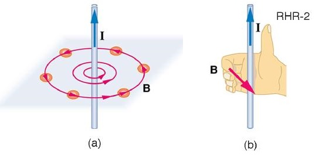
Themagnetic field strength (magnitude) produced by a long straight current-carrying wireis found by experiment to be
where \(I\) is the current, \(r\) is the shortest distance to the wire, and the constant \(\mu_{0} = 4\pi \times 10^{-7} T \cdot m/A\) is thepermeability of free space. (\(\mu_{0}\) is one of the basic constants in nature. We will see later that \(\mu_{0}\) is related to the speed of light.) Since the wire is very long, the magnitude of the field depends only on distance from the wire \(r\), not on position along the wire.
Find the current in a long straight wire that would produce a magnetic field twice the strength of the Earth’s at a distance of 5.0 cm from the wire.
The Earth’s field is about \(5.0 \times 10^{-5} T\), and so here \(B\) due to the wire is taken to be \(1.0 \times 10^{-4} T\). The equation \(B = \frac{\mu_{0}I}{2\pi r}\) can be used to find \(I\), since all other quantities are known.
Solving for \(I\) and entering known values gives
So a moderately large current produces a significant magnetic field at a distance of 5.0 cm from a long straight wire. Note that the answer is stated to only two digits, since the Earth’s field is specified to only two digits in this example.
The magnetic field of a long straight wire has more implications than you might at first suspect.Each segment of current produces a magnetic field like that of a long straight wire, and the total field of any shape current is the vector sum of the fields due to each segment.The formal statement of the direction and magnitude of the field due to each segment is called theBiot-Savart Law. Integral calculus is needed to sum the field for an arbitrary shape current. This results in a more complete law, calledAmpere's Law, which relates magnetic field and current in a general way. Ampere’s law in turn is a part ofMaxwell's equations, which give a complete theory of all electromagnetic phenomena. Considerations of how Maxwell’s equations appear to different observers led to the modern theory of relativity, and the realization that electric and magnetic fields are different manifestations of the same thing. Most of this is beyond the scope of this text in both mathematical level, requiring calculus, and in the amount of space that can be devoted to it. But for the interested student, and particularly for those who continue in physics, engineering, or similar pursuits, delving into these matters further will reveal descriptions of nature that are elegant as well as profound. In this text, we shall keep the general features in mind, such as RHR-2 and the rules for magnetic field lines listed in 22.4, while concentrating on the fields created in certain important situations.
MAKING CONNECTIONS: RELATIVITY:
Hearing all we do about Einstein, we sometimes get the impression that he invented relativity out of nothing. On the contrary, one of Einstein’s motivations was to solve difficulties in knowing how different observers see magnetic and electric fields.
The magnetic field near a current-carrying loop of wire is shown in Figure . Both the direction and the magnitude of the magnetic field produced by a current-carrying loop are complex. RHR-2 can be used to give the direction of the field near the loop, but mapping with compasses and the rules about field lines given inSection 22.4are needed for more detail. There is a simple formula for themagnetic field strength at the center of a circular loop. It is
where \(R\) is the radius of the loop. This equation is very similar to that for a straight wire, but it is validonlyat the center of a circular loop of wire. The similarity of the equations does indicate that similar field strength can be obtained at the center of a loop. One way to get a larger field is to have \(N\) loops; then, the field is \(B = N \mu_{0} I / \left(2R\right)\). Note that the larger the loop, the smaller the field at its center, because the current is farther away.
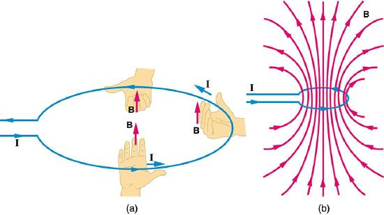
Asolenoidis a long coil of wire (with many turns or loops, as opposed to a flat loop). Because of its shape, the field inside a solenoid can be very uniform, and also very strong. The field just outside the coils is nearly zero. Figure shows how the field looks and how its direction is given by RHR-2.
![A diagram of a solenoid. The current runs up from the battery on the left side and spirals around with the solenoid wire such that the current runs upward in the front sections of the solenoid and then down the back. An illustration of the right hand rule 2 shows the thumb pointing up in the direction of the current and the fingers curling around in the direction of the magnetic field. A length wise cutaway of the solenoid shows magnetic field lines densely packed and running from the south pole to the north pole, through the solenoid. Lines outside the solenoid are spaced much farther apart and run from the north pole out around the solenoid to the south pole.](images/ch22/fig22-39-a-diagram-of-a-solenoid-the-current-runs.jpg)
The magnetic field inside of a current-carrying solenoid is very uniform in direction and magnitude. Only near the ends does it begin to weaken and change direction. The field outside has similar complexities to flat loops and bar magnets, but themagnetic field strength inside a solenoidis simply \[B = \mu_{0}nI \left(inside \quad a \quad solenoid\right),\label{10.22.4}\] where \(n\) is the number of loops per unit length of the solenoid (\(n = N/l\) with \(N\) being the number of loops and \(l\) the length). Note that \(B\) is the field strength anywhere in the uniform region of the interior and not just at the center. Large uniform fields spread over a large volume are possible with solenoids, as the example implies.
What is the field inside a 2.00-m-long solenoid that has 2000 loops and carries a 1600-A current?
To find the field strength inside a solenoid, we use \(B = \mu_{0}nI\). First, we note the number of loops per unit length is
Substituting known values gives
This is a large field strength that could be established over a large-diameter solenoid, such as in medical uses of magnetic resonance imaging (MRI). The very large current is an indication that the fields of this strength are not easily achieved, however. Such a large current through 1000 loops squeezed into a meter’s length would produce significant heating. Higher currents can be achieved by using superconducting wires, although this is expensive. There is an upper limit to the current, since the superconducting state is disrupted by very large magnetic fields.
There are interesting variations of the flat coil and solenoid. For example, the toroidal coil used to confine the reactive particles in tokamaks is much like a solenoid bent into a circle. The field inside a toroid is very strong but circular. Charged particles travel in circles, following the field lines, and collide with one another, perhaps inducing fusion. But the charged particles do not cross field lines and escape the toroid. A whole range of coil shapes are used to produce all sorts of magnetic field shapes. Adding ferromagnetic materials produces greater field strengths and can have a significant effect on the shape of the field. Ferromagnetic materials tend to trap magnetic fields (the field lines bend into the ferromagnetic material, leaving weaker fields outside it) and are used as shields for devices that are adversely affected by magnetic fields, including the Earth’s magnetic field.
PHET EXPLORATIONS: GENERATOR
Generate electricity with a bar magnet! Discover the physics behind the phenomena by exploring magnets and how you can use them to make a bulb light.
📖 OpenStax College Physics, Section 22.9. openstax.org · CC BY 4.0
- Describe the effects of the magnetic force between two conductors.
- Calculate the force between two parallel conductors.
You might expect that there are significant forces between current-carrying wires, since ordinary currents produce significant magnetic fields and these fields exert significant forces on ordinary currents. But you might not expect that the force between wires is used todefinethe ampere. It might also surprise you to learn that this force has something to do with why large circuit breakers burn up when they attempt to interrupt large currents.
The force between two long straight and parallel conductors separated by a distance \(r\) can be found by applying what we have developed in preceding sections. Figure shows the wires, their currents, the fields they create, and the subsequent forces they exert on one another. Let us consider the field produced by wire 1 and the force it exerts on wire 2 (call the force \(F_{2}\)). The field due to \(I_{1}\) at a distance \(r\) is given to be
![Figure a shows two parallel wires, both with currents going up. The magnetic field lines of the first wire are shown as concentric circles centered on wire 1 and in a plane perpendicular to the wires. The magnetic field is in the counter clockwise direction as viewed from above. Figure b shows a view from above and shows the current-carrying wires as two dots. Around wire one is a circle that represents a magnetic field line due to that wire. The magnetic field passes directly through wire two. The magnetic field is in the counter clockwise direction. The force on wire two is to the left, toward wire one.](images/ch22/fig22-40-figure-a-shows-two-parallel-wires-both-w.jpg)
This field is uniform along wire 2 and perpendicular to it, and so the force \(F_{2}\) it exerts on wire 2 is given by \(F = IlB sin\theta\) with \(sin \theta = 1\): \[F_{2} = I_{2}lB_{1}.\label{22.11.2}\] By Newton’s third law, the forces on the wires are equal in magnitude, and so we just write \(F\) for the magnitude of \(F_{2}\). (Note that \(F_{1} = -F_{2}\).) Since the wires are very long, it is convenient to think in terms of \(F/l\), the force per unit length. Substituting the expression for \(B_{1}\) into the last equation and rearranging terms gives
This force is responsible for thepinch effectin electric arcs and plasmas. The force exists whether the currents are in wires or not. In an electric arc, where currents are moving parallel to one another, there is an attraction that squeezes currents into a smaller tube. In large circuit breakers, like those used in neighborhood power distribution systems, the pinch effect can concentrate an arc between plates of a switch trying to break a large current, burn holes, and even ignite the equipment. Another example of the pinch effect is found in the solar plasma, where jets of ionized material, such as solar flares, are shaped by magnetic forces.
Theoperational definition of the ampereis based on the force between current-carrying wires. Note that for parallel wires separated by 1 meter with each carrying 1 ampere, the force per meter is
Since \(\mu_{0}\) is exactly \(4\pi \times 10^{-7} T \cdot m/A\) by definition, and because \(1 T = 1 N/\left(A \cdot m\right)\), the force per meter is exaclty \(2 \times 10^{-7} N/m\). This is the basis of the operational definition of the ampere.
Definition: THE AMPERE
One ampere of current through each of two parallel conductors of infinite length, separated by one meter in empty space free of other magnetic fields, causes a force of exactly \(2 \times 10^{-7} N/m\) on each conductor.
Infinite-length straight wires are impractical and so, in practice, a current balance is constructed with coils of wire separated by a few centimeters. Force is measured to determine current. This also provides us with a method for measuring the coulomb. We measure the charge that flows for a current of one ampere in one second. That is, \(1 C = 1 A \cdot s\). For both the ampere and the coulomb, the method of measuring force between conductors is the most accurate in practice.
📖 OpenStax College Physics, Section 22.10. openstax.org · CC BY 4.0
- Describe some applications of magnetism.
The curved paths followed by charged particles in magnetic fields can be put to use. A charged particle moving perpendicular to a magnetic field travels in a circular path having a radius \(r\).
It was noted that this relationship could be used to measure the mass of charged particles such as ions. A mass spectrometer is a device that measures such masses. Most mass spectrometers use magnetic fields for this purpose, although some of them have extremely sophisticated designs. Since there are five variables in the relationship, there are many possibilities. However, if \(v\), \(q\), and \(B\) can be fixed, then the radius of the path \(r\) is simply proportional to the mass \(m\) of the charged particle. Let us examine one such mass spectrometer that has a relatively simple design (Figure . The process begins with an ion source, a device like an electron gun. The ion source gives ions their charge, accelerates them to some velocity \(v\), and directs a beam of them into the next stage of the spectrometer. This next region is avelocity selectorthat only allows particles with a particular value of \(v\) to get through.
![Diagram of a mass spectrometer. Ions travel to the right with velocity v from the ion source. Magnetic field lines come out of the page between two charged plates on either side of the ion beam. The electric force F equals q E acts on the ions in an upward direction while the magnetic force F equals q v B acts in a downward direction. The forces have the same magnitude and thus the ions travel in a straight line between the two plates. The ions then enter another region where the magnetic field lines come out of the page. An ion of mass 1 curves around, traveling a net distance of 2 r 1. An ion of mass 2 curves around, traveling a net distance of 2 r 2.](images/ch22/fig22-41-diagram-of-a-mass-spectrometer-ions-trav.jpg)
The velocity selector has both an electric field and a magnetic field, perpendicular to one another, producing forces in opposite directions on the ions. Only those ions for which the forces balance travel in a straight line into the next region. If the forces balance, then the electric force \(F = qE\) equals the magnetic force \(F = qvB\), so that \(qE = qvB\). Noting that \(q\) cancels, we see that
is the velocity particles must have to make it through the velocity selector, and further, that \(v\) can be selected by varying \(E\) and \(B\). In the final region, there is only a uniform magnetic field, and so the charged particles move in circular arcs with radii proportional to particle mass. The paths also depend on charge \(q\), but since \(q\) is in multiples of electron charges, it is easy to determine and to discriminate between ions in different charge states.
Mass spectrometry today is used extensively in chemistry and biology laboratories to identify chemical and biological substances according to their mass-to-charge ratios. In medicine, mass spectrometers are used to measure the concentration of isotopes used as tracers. Usually, biological molecules such as proteins are very large, so they are broken down into smaller fragments before analyzing. Recently, large virus particles have been analyzed as a whole on mass spectrometers. Sometimes a gas chromatograph or high-performance liquid chromatograph provides an initial separation of the large molecules, which are then input into the mass spectrometer.
What do non-flat-screen TVs, old computer monitors, x-ray machines, and the 2-mile-long Stanford Linear Accelerator have in common? All of them accelerate electrons, making them different versions of the electron gun. Many of these devices use magnetic fields to steer the accelerated electrons. Figure shows the construction of the type of cathode ray tube (CRT) found in some TVs, oscilloscopes, and old computer monitors. Two pairs of coils are used to steer the electrons, one vertically and the other horizontally, to their desired destination.
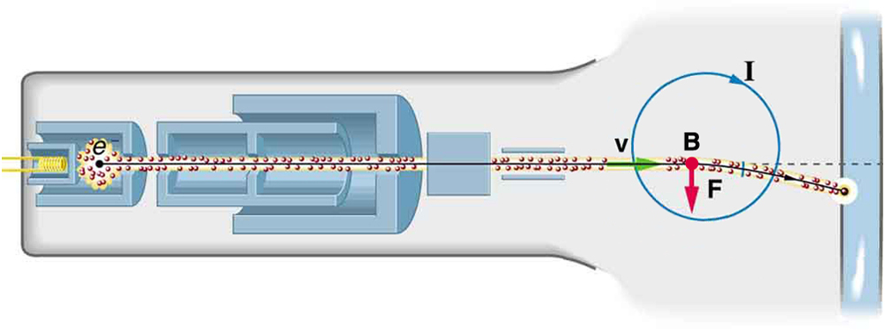
Magnetic resonance imaging (MRI)is one of the most useful and rapidly growing medical imaging tools. It non-invasively produces two-dimensional and three-dimensional images of the body that provide important medical information with none of the hazards of x-rays. MRI is based on an effect callednuclear magnetic resonance (NMR)in which an externally applied magnetic field interacts with the nuclei of certain atoms, particularly those of hydrogen (protons). These nuclei possess their own small magnetic fields, similar to those of electrons and the current loops discussed earlier in this chapter.
When placed in an external magnetic field, such nuclei experience a torque that pushes or aligns the nuclei into one of two new energy states—depending on the orientation of its spin (analogous to the N pole and S pole in a bar magnet). Transitions from the lower to higher energy state can be achieved by using an external radio frequency signal to “flip” the orientation of the small magnets. (This is actually a quantum mechanical process. The direction of the nuclear magnetic field is quantized as is energy in the radio waves. We will return to these topics in later chapters.) The specific frequency of the radio waves that are absorbed and reemitted depends sensitively on the type of nucleus, the chemical environment, and the external magnetic field strength. Therefore, this is aresonancephenomenon in whichnucleiin amagneticfield act like resonators (analogous to those discussed in the treatment of sound in "Oscillatory Motion and Waves") that absorb and reemit only certain frequencies. Hence, the phenomenon is namednuclear magnetic resonance (NMR).
NMR has been used for more than 50 years as an analytical tool. It was formulated in 1946 by F. Bloch and E. Purcell, with the 1952 Nobel Prize in Physics going to them for their work. Over the past two decades, NMR has been developed to produce detailed images in a process now called magnetic resonance imaging (MRI), a name coined to avoid the use of the word “nuclear” and the concomitant implication that nuclear radiation is involved. (It is not.) The 2003 Nobel Prize in Medicine went to P. Lauterbur and P. Mansfield for their work with MRI applications.
The largest part of the MRI unit is a superconducting magnet that creates a magnetic field, typically between 1 and 2 T in strength, over a relatively large volume. MRI images can be both highly detailed and informative about structures and organ functions. It is helpful that normal and non-normal tissues respond differently for slight changes in the magnetic field. In most medical images, the protons that are hydrogen nuclei are imaged. (About 2/3 of the atoms in the body are hydrogen.) Their location and density give a variety of medically useful information, such as organ function, the condition of tissue (as in the brain), and the shape of structures, such as vertebral disks and knee-joint surfaces. MRI can also be used to follow the movement of certain ions across membranes, yielding information on active transport, osmosis, dialysis, and other phenomena. With excellent spatial resolution, MRI can provide information about tumors, strokes, shoulder injuries, infections, etc.
An image requires position information as well as the density of a nuclear type (usually protons). By varying the magnetic field slightly over the volume to be imaged, the resonant frequency of the protons is made to vary with position. Broadcast radio frequencies are swept over an appropriate range and nuclei absorb and reemit them only if the nuclei are in a magnetic field with the correct strength. The imaging receiver gathers information through the body almost point by point, building up a tissue map. The reception of reemitted radio waves as a function of frequency thus gives position information. These “slices” or cross sections through the body are only several mm thick. The intensity of the reemitted radio waves is proportional to the concentration of the nuclear type being flipped, as well as information on the chemical environment in that area of the body. Various techniques are available for enhancing contrast in images and for obtaining more information. Scans called T1, T2, or proton density scans rely on different relaxation mechanisms of nuclei. Relaxation refers to the time it takes for the protons to return to equilibrium after the external field is turned off. This time depends upon tissue type and status (such as inflammation).
While MRI images are superior to x rays for certain types of tissue and have none of the hazards of x rays, they do not completely supplant x-ray images. MRI is less effective than x rays for detecting breaks in bone, for example, and in imaging breast tissue, so the two diagnostic tools complement each other. MRI images are also expensive compared to simple x-ray images and tend to be used most often where they supply information not readily obtained from x rays. Another disadvantage of MRI is that the patient is totally enclosed with detectors close to the body for about 30 minutes or more, leading to claustrophobia. It is also difficult for the obese patient to be in the magnet tunnel. New “open-MRI” machines are now available in which the magnet does not completely surround the patient.
Over the last decade, the development of much faster scans, called “functional MRI” (fMRI), has allowed us to map the functioning of various regions in the brain responsible for thought and motor control. This technique measures the change in blood flow for activities (thought, experiences, action) in the brain. The nerve cells increase their consumption of oxygen when active. Blood hemoglobin releases oxygen to active nerve cells and has somewhat different magnetic properties when oxygenated than when deoxygenated. With MRI, we can measure this and detect a blood oxygen-dependent signal. Most of the brain scans today use fMRI.
Other Medical Uses of Magnetic Fields
Currents in nerve cells and the heart create magnetic fields like any other currents. These can be measured but with some difficulty since their strengths are about \(10^{-6}\) to \(10^{-8}\)lessthan the Earth’s magnetic field. Recording of the heart’s magnetic field as it beats is called amagnetocardiogram (MCG), while measurements of the brain's magnetic field is called amagnetoencephalogram (MEG). Both give information that differs from that obtained by measuring the electric fields of these organs (ECGs and EEGs), but they are not yet of sufficient importance to make these difficult measurements common.
In both of these techniques, the sensors do not touch the body. MCG can be used in fetal studies, and is probably more sensitive than echocardiography. MCG also looks at the heart’s electrical activity whose voltage output is too small to be recorded by surface electrodes as in EKG. It has the potential of being a rapid scan for early diagnosis of cardiac ischemia (obstruction of blood flow to the heart) or problems with the fetus.
MEG can be used to identify abnormal electrical discharges in the brain that produce weak magnetic signals. Therefore, it looks at brain activity, not just brain structure. It has been used for studies of Alzheimer’s disease and epilepsy. Advances in instrumentation to measure very small magnetic fields have allowed these two techniques to be used more in recent years. What is used is a sensor called a SQUID, for superconducting quantum interference device. This operates at liquid helium temperatures and can measure magnetic fields thousands of times smaller than the Earth’s.
Finally, there is a burgeoning market for magnetic cures in which magnets are applied in a variety of ways to the body, from magnetic bracelets to magnetic mattresses. The best that can be said for such practices is that they are apparently harmless, unless the magnets get close to the patient’s computer or magnetic storage disks. Claims are made for a broad spectrum of benefits from cleansing the blood to giving the patient more energy, but clinical studies have not verified these claims, nor is there an identifiable mechanism by which such benefits might occur.
PHET EXPLORATIONS:MAGNET AND COMPASS
Ever wonder how a compass worked to point you to the Arctic? Explore the interactions between a compass and bar magnet, and then add the Earth and find the surprising answer! Vary the magnet's strength, and see how things change both inside and outside. Use the field meter to measure how the magnetic field changes.
📖 OpenStax College Physics, Section 22.11. openstax.org · CC BY 4.0
| Section | Title |
|---|---|
| 22.0 | 22.0: Prelude to Magnetism |
| 22.1 | 22.1: Magnets |
| 22.2 | 22.2: Ferromagnets and Electromagnets |
| 22.3 | 22.3: Magnetic Fields and Magnetic Field Lines |
| 22.4 | 22.4: Magnetic Field Strength- Force on a Moving Charge in a Magnetic Field |
| 22.5 | 22.5: Force on a Moving Charge in a Magnetic Field- Examples and Applications |
| 22.6 | 22.6: The Hall Effect |
| 22.7 | 22.7: Magnetic Force on a Current-Carrying Conductor |
| 22.8 | 22.8: Torque on a Current Loop - Motors and Meters |
| 22.9 | 22.9: Magnetic Fields Produced by Currents- Ampere’s Law |
| 22.10 | 22.10: Magnetic Force between Two Parallel Conductors |
| 22.11 | 22.11: More Applications of Magnetism |